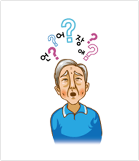

뇌졸중 재활
뇌졸중 재활의 정의
뇌졸중 재활이란 뇌신경 손상에 의해 잃어버린 기능을 환자가
다시 회복하도록 도와주는 과정입니다.
뇌졸중 재활치료에 효과가 입증된 과학적인 치료를
통해서 최적의 치료효과를 기대할 수 있습니다.
이를 위해서 뇌재활전문의, 치료사 등 전문재활팀이
참여하여야 좋은 성과를 얻을 수 있습니다.
-
재활치료의 목표
- - 뇌졸중 후 생긴 운동마비,언어장애,연하장애, 인지장애와 같은 후유증의 평가 및 치료
- - 뇌졸중 후 생긴 합병증의 예방
- - 뇌졸중 후 생긴 장애의 최소화
- - 환자 및 가족들의 정신적·사회적 적응 촉진
- - 가정생활,사회생활로의 복귀 촉진
- - 삶의 질 증진
뇌졸중의 장애 증상
뇌졸중의 장애증상 1 - 운동마비
- 몸의 한쪽이 마비된 상태
- 뇌병변의 반대쪽 얼굴, 팔다리가 움직이지 않는 상태가 지속
뇌졸중의 장애증상 2 - 운동실조증, 평형·보행장애
- 손으로 집으려 해도 방향을 잘 잡지 못하고 떨림
- 걸으려고 하면 몸이 한쪽으로 기울어짐
- 팔, 다리에 힘은 있는데 마음대로 움직임을 조절할 수 없음

뇌졸중의 장애증상 3 - 언어장애
-
실어증(Aphasia)
- - 듣기, 말하기, 읽기, 쓰기에 어려움을 보임
- - 다른 사람의 말은 이해하지만 말을 유창하게 하지 못하는 운동실어증(브로카 실어증)
- - 말은 유창하게 할 수 있지만, 의미 있는 말을 하지 못하고 다른 사람의 말을
이해하지 못하는 이해실어증(베르니케 실어증) - - 다른 사람의 말을 이해하고 유창하게 할 수 있지만,단어를 떠올리는데
어려움을 느끼는 명칭실어증 등이 있음.
-
마비 말장애(구음장애 Dysarthria)
- 말명료도가 저하됨
-
말실행증(Apraxia of Speech)
- 말동작이 순차적으로 잘 진행되지 못하여 의사소통의 의도는 있으나 제대로
동작을 수행하지 못하게 되는 말운동장애
- 말동작이 순차적으로 잘 진행되지 못하여 의사소통의 의도는 있으나 제대로
뇌졸중의 장애증상 4 - 연하장애
-
증상
- - 음식을 삼킬 때 기도로 흡인되어 기침을 함
- - 음식물이 입술 아래로 흘러내림
- - 음식물을 입에 오래 가지고 있음
-
진단
- - 연하 조영 검사를 통하여 진단
- - 방사선 투시하에 물부터 음식을 먹으며 기도로 음식이 넘어가는 것을 검사
뇌졸중의 장애증상 5 - 인지장애
- 과거의 기억을 상실
- 새로운 정보를 습득하지 못함
- 눈으로 보고도 머리에서 무엇인지 식별하지 못함
- 대소변을 가리지 못함
- 광적인 과다 행동을 보임
뇌졸중의 장애증상 6 - 편측무시
- 자신의 신체의 일부나 주변 환경에 대한 자극에 대해 인지하지 못함
- 한 쪽만 쳐다보고 있음
- 음식물도 한 쪽에 있는 것만 먹음
- 걷다가 한 측으로 치우침
뇌졸중의 장애증상 7 - 어깨 아탈구
- 마비로 인한 정상적인 근육활동의 소실로 어깨의 아탈구 발생함
- 매우 심한 통증이 동반될 수 있음
재활치료의
효과 및 중요성
재활치료의 효과
인지기능 사회적능력 의사소통능력" class="marT20 marL-10">재활치료의 시기
재활치료팀
재활치료의 종류
뇌졸중 환자의 재활 1 - 운동치료
운동치료는 마비된 신체부위의 감각 및 운동능력을 향상시켜 앉기에서 부터 보행하기까지의 기능적 회복을 도와줍니다.
-
운동치료의 종류
- - 중추신경계 발달 재활 치료 : 정상적인 근긴장과 자세, 움직임을 반복하도록 유도하여, 자세나 움직임을 바로잡아 주고
정상 운동 형태를 촉진시키는 치료입니다. - - 근력 및 지구력 강화 운동 : 근력 및 지구력을 강화시켜 보행 및 활동에 도움을 주는 치료입니다.
-
- 보행 훈련 : 평행봉에서의 보행, 부분체중부하 트래드밀에서의 보행 및 지팡이나 워커를 이용한 보행을 훈련하여 경사로나 계단
등에서도
보행할 수 있도록 훈련을 합니다. -
- 기능적전기자극치료 : 근위축을 방지하거나 지연시켜 근육 기능의 퇴화를 막고, 근육이 가지는 본래의 운동 기능을 지속할 수
있도록
재교육하는 효과를 가집니다.
- - 중추신경계 발달 재활 치료 : 정상적인 근긴장과 자세, 움직임을 반복하도록 유도하여, 자세나 움직임을 바로잡아 주고
뇌졸중 환자의 재활 2 - 작업치료
뇌졸중으로 인해 손상된 기능을 회복시키고 악화방지 및 독립성을 최대화하고 기능 증진시켜주는 치료입니다.
환자의 상태에 따라
휠체어에서 침대로 오고 가는 이동 훈련, 불편한 팔, 다리를 사용하여 옷을 입고 벗는 훈련, 간단한 보조 장비를 사용하여 숟가락이나 포크를 사용하는 방법 등을
다양하게 훈련 받을 수 있습니다.
-
작업치료의 종류
- - 상지 기능 증진 활동 : 력과 지구력 증진, 관절가동범위 증진, 운동성 능력의 향상, 소동작 기능 향상을 목표로 시행합니다.
-
- 일상생활동작훈련
- - 일상생활 및 사회적인 독립성을 향상시킵니다.
- - 휠체어에서 침대로 오고 가는 이동 훈련
- - 불편한 팔, 다리를 사용하여 옷을 입고 벗는 훈련
- - 간단한 보조 장비를 사용하여 숟가락이나 포크를 사용하는 방법 훈련
뇌졸중 환자의 재활 3 - 인지 및 지각장애치료
뇌졸중 환자의 인지력과 지각 능력을 정확히 평가하여 적절한 약물 치료, 개인 또는 집단 인지훈련, 컴퓨터를 이용한
인지훈련 등의
재활치료를 실시하고 있습니다.

-
전산화인지치료(COMCOG)
- 집중력과 기억력에 장애를 보이는 환자들에게 실시하여 인지기능의 회복을 촉진할 목적으로 개발된 컴퓨터를 이용한 인지재활 프로그램입니다.
-
상지로봇재활치료(ARMEO)
- - 로봇을 이용한 재활치료도구로 실제와 같은 활동을 수행하여 잔존하는 상지기능을 유지시키고 새로운 움직임을 학습함으로 협응 및 동작기술을 회복시킵니다.
- - 환자들이 쉽고, 흥미있게 과제를 수행하여 시지각능력, 주의집중력, 문제해결능력 등을 향상시킬 수 있으며 인지기능의 객관적이고 체계적인 치료를 시행할 수 있습니다 .
뇌졸중 환자의 재활 4 - 연하장애치료
작업치료실에서는 연하장애를 위하여 식사환경조성에 대한 안내, 적절한 식이 안내, 구강운동, 삼킴 반사 촉진, 기타 식사 중재법을
제공합니다.
연하장애전기자극치료를 통하여 보다 효과적으로 섭식 문제를 돕고 있습니다.
뇌졸중 환자의 재활 5 - 언어치료
- 실어증은 언어를 통한 의사소통능력 향상을 위하여 환자가 보이는 언어적 문제에 따라 자극 중심 치료법, 듣기 중심 치료, 말하기 중심 치료(수의적 통제 치료법, 멜로디 억양 치료법), 단어인출 치료법, 시각적 동작치료법, 기능적 의사소통 중심 치료법, 읽기 및 쓰기 치료 등을 적용하게 됩니다.
- 마비말장애는 환자의 말 명료도 향상을 위하여 말 하위체계별로 행동적 치료법, 약물/수술적 치료법 등을 적용하게 됩니다.
- 말실행증은 피드백 원리, 자극/반응 요소에 따른 치료법, 조음-운동학적 접근법, 속도-리듬 제어 접근법, 보완대체의사소통 접근법, 구강근육 자극법 등을 통해 최대한 효율적으로 말 할 수 있도록 도와주게 됩니다.